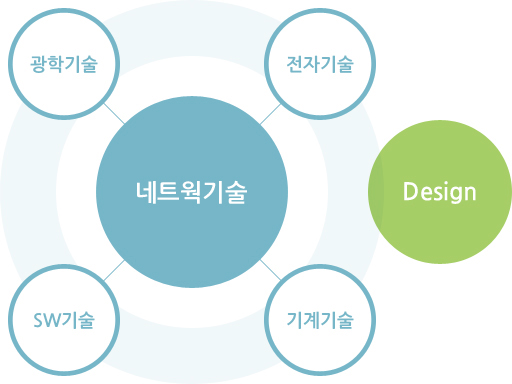

핵심역량
원가경쟁력 : 50%대의 매출원가율
자사는 일본의 경쟁사와 비교하여 원가 경쟁력을 확보하기 위해 매출액 대비 20% 이상의 기술개발과 원가 절감을 위해 6시그마 활동을 포함한 혁신활동을 지속적으로 전개하고 있습니다.
전자부의 ASIC화를 통해 전자부품 수를 일본 경쟁사와 비교하여 1/2이하로 줄이고 광학부에 있어서도 차별화된 방식을 적용하여 모터, 렌즈 수를 1/2로 절감하여 매출 원가율 50%대를 유지하고 있습니다.
또한 2002년부터 전개한 6시그마 활동의 성과가 가시화되기 시작하고 매년 2개 이상의 고부가가치 신제품이 개발되면서 이러한 원가경쟁력은 계속 유지될 것입니다.
우수한기술력 : 첨단 Hight-tech기술 보유 및 CE, FDA취득
자사는 전체 임직원의 30% 이상이 연구 인력으로 이중 석사 이상의 비중이 65%이며, LG, 삼성 및 국내 유명 벤처기업에서 5년 이상 연구 경험이 있는 인력이 전체의 70% 이상에 달해 연구인력의 질이 매우 우수합니다.
이는 회사가 설립 이후 지속적으로 지적재산권의 출원 및 등록이 이루어지고 있으며 2000년 9월에 자동 검안기가 KT 마크를 획득하였으며 2001년 12월에는 그 기술력을 인정받아 산업자원부에서 주관하는 정밀기술진흥 대회 정밀 제품기술 부문에서 대통령상을 수상하는 등 지적재산권 및 수상 실적이 기술력을 입증하고 있습니다.
뿐만 아니라 현재 자사에서 생산하고 있는 전 제품은 유럽의 CE 인증을 취득하였고, 자동 검안기, 자동 렌즈미터, 근접 시력 진단기의 경우 미국 FDA 허가를 취득한 바 있습니다.
또한 매출액 대비 15%이상을 R&D에 투자하여 지속적인 성능 개선 및 신제품 개발을 통해 기술 경쟁력을 확보하고 있습니다. 광학기술, 전자기술, 기계기술 및 S/W 기술 등 4가지 핵심기술과 이를 융합하는 네트웍 기술을 보유하고 있고, 자체적인 디자인팀을 운영하고 있으며, KT마크, 정밀기술 진흥대회 대통령상 수상, 벤처기업 대상 수상과 함께 다수의 지적재산권 등으로 그 기술력을 인정받고 있습니다.

전세계적인 마케팅망 : 전세계 90개국에 120여개 Distrubutor 운영
현재 자사는 전세계 90개국에 120여개 Distributor를 운영하고 있습니다. 자사가 영위하고 있는 사업은 안경사, 검안사, 안과 의사 등 비교적 고소득에 학력이 높은 집단인 만큼 동 사업의 성패는 이들 Distributor들이 얼마나 최종 고객과 밀착된 관계를 유지하고 있는가에 달려 있습니다.
자사의 Distributor 대부분은 Nidek, Topcon, Canon, Nikon 등 일본의 세계적인 Major Player의 Distributor를 했던 경험이 있는 업체여서 동 업계에 대한 이해가 깊어 신제품이나 신모델 개발 시 고급 정보 수집력이 뛰어날 뿐만 아니라 최종 고객과의 밀접한 관계를 유지하고 있습니다.
짧은 업력에도 불구하고 자사가 이렇게 많은 Distributor를 확보할 수 있었던 것은 바로 원가 경쟁력과 품질 때문입니다. 일본의 우수 경쟁사에 비해 결코 떨어지지 않은 품질의 제품으로 경쟁업체에 비해 상대적으로 높은 마진을 보장해 줌으로써 빠른 시일내에 많은 Distributor를 확보할 수 있었습니다.
자사는 향후 미국을 위시하여 아직 판매망이 취약한 개발국가의 판매망을 중점 보강하여 선진국 대 개발도상국의 판매비중을 50%:50%로 향상시킬 예정입니다.
더불어 자사의 세계화 전략들이 성공적으로 추진될 경우 머지 않은 장래에 일본의 경쟁업체들에 비해 결코 뒤떨어지지 않는 판매망 구축을 완료할 것으로 전망됩니다.
안정적인 원재료 수급 : 부품 국산화율 90% 이상
자사는 핵심 부품에 대해 자체 설계에 의한 외주 제작을 목표로 연구개발을 전개하여 현재 자체 설계에 의한 제작 비율이 90% 이상이며 회사 설립 이래 주요한 부품에 대해서 5개 정도의 핵심 외주 업체와의 지속적인 동반자 관계를 구축, 유지하여 부품의 국산화율이 90% 이상에 달하므로 제품 생산을 위한 원자재의 수급상에 전혀 지장이 없습니다.
또한 매월 주요 외주 업체와의 품질 회의를 개최하여 문제점 개선 및 지도 활동을 추진하는 등 원재료의 안정적 수급 뿐만 아니라 지속적인 원가 절감 노력도 병행하고 있습니다.
CEO의 경영능력 : 안과 의료기기 전문가
자사의 대표이사는 물리학 박사로써 해박한 안 광학에 대한 전문지식을 보유하고 있으며 LG그룹연구소에서 근무한 경험을 바탕으로 1999년에 법인체인 자사를 설립하였습니다. 이후 안광학 의료기기 관련 넓은 식견으로 안경원용 진단기기 기술개발에 집중 투자하고, 생산성 향상에도 전력투구하여 매년 큰폭의 성장을 실현시켰으며, 지금의 안정된 안 광학 의료기기 제조기업으로 자사를 이끌어 가고 있습니다.
선진화된 Management System : 지식경영, 6시그마 운영
자사는 그 경영 철학에 반영되어 있는 최고에 대한 믿음과 목표에 대한 열정을 시현하기 위하여 최고 인재 육성 프로그램을 운영하고 있습니다. 각 개인별 CPM(Career Path Management)에 기반하여 다단계 교육 프로그램을 작성하여 관련 분야 최고의 전문가로 육성하기 위한 프로그램을 시행중이며 최고의 인재를 유치하기 위해 핵심 인재 유치 실적을 인사고과에 반영하는 등 최고 전문가 유치 및 육성에 상당한 노력을 기울이고 있습니다.
또한 최고의 인재에게 최고의 대우를 한다는 취지 아래 개인별 목표관리에 의한 업적 평가 시스템을 운영 중이며 발탁진급제도, 성과상여제도, 조기진급제도와 회사가 경영실적을 달성했을 경우 그 실적을 평가하여 이익을 공유하는 Profit Sharing제도를 운영하여 목표 달성을 촉진하고 성과가 우수한 인재에 대해 차별적인 보상을 실시하는 성과주의 인사시스템을 운영하고 있습니다.
더불어 자사는 사업의 본질과 특성에 맞는 지식관리시스템인 e-KISS를 자체 개발하여 운영 중이며 6시그마에 기초한 품질 관리 시스템을 운영하는 등 선진화된 경영 시스템을 구축하여 시행하고 있어 경영에 있어 대기업에 버금가는 수준의 경쟁력을 갖추고 있다고 판단됩니다.